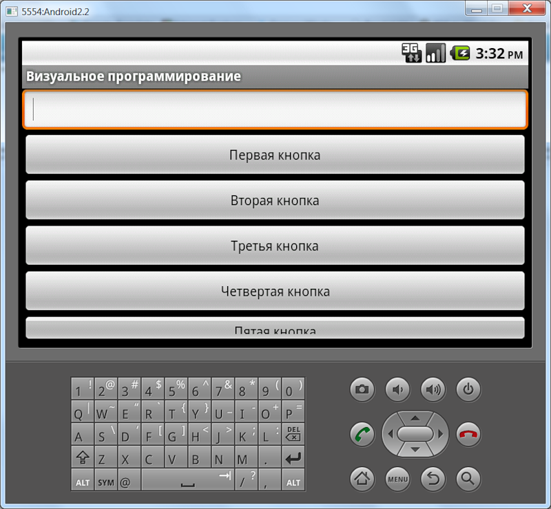
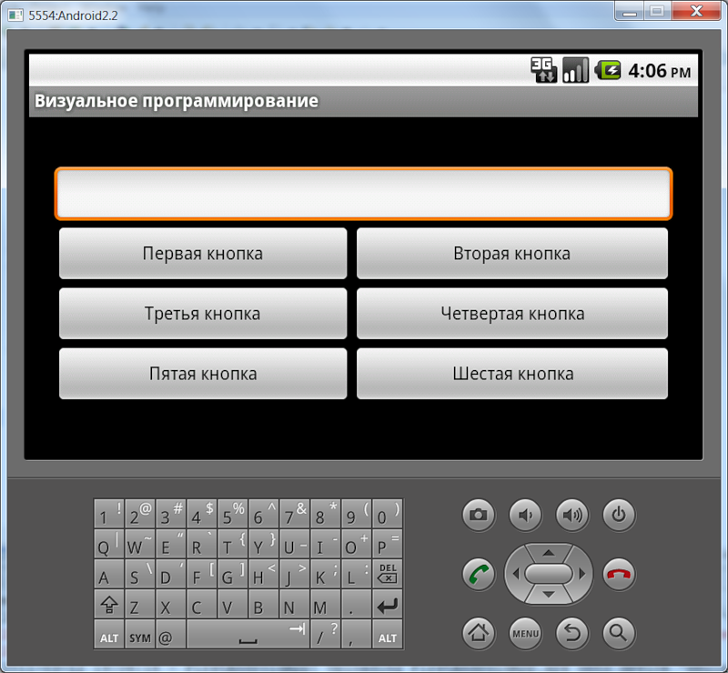
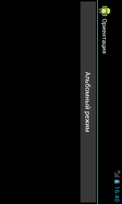

/* Моя кошка замечательно разбирается в программировании. Стоит мне объяснить проблему ей - и все становится ясно. */
John Robbins, Debugging Applications, Microsoft Press, 2000

/* Моя кошка замечательно разбирается в программировании. Стоит мне объяснить проблему ей - и все становится ясно. */
John Robbins, Debugging Applications, Microsoft Press, 2000
Вступление
Узнать ориентацию программно
Кручу-верчу, запутать хочу!
Установить ориентацию программно и через манифест
Запрет на создание новой активности
Исчезающий текст
Проверка на существование
Когда создавались первые портативные устройства - КПК и смартфоны, то за основу бралась настольная операционная система и допиливалась под мобильное устройство. Лишние функции удалялись, а некоторые функции добавлялись. Но при этом как-то совсем упустили из виду, что в отличие от громоздких мониторов и экранов ноутбуков, карманные устройства можно вращать в руках. Поэтому первые телефоны не умели менять ориентацию экрана. Некоторые программисты самостоятельно стали создавать программы, которые умели переключаться в разные режимы. Затем эту возможность стали включать в настройки аппарата. А сравнительно недавно аппараты научились самостоятельно определять ориентацию экрана.
Всего существует два режима - портретный и альбомный. На большинстве телефонов используется по умолчанию портретный режим (как на паспорте). Альбомный режим знаком нам по обычным мониторам.
Рассмотрим следующий случай. Предположим, у нас в приложении имеется одно текстовое поле и шесть кнопок. Вроде все нормально.

Но стоит нам повернуть устройство на 90 градусов (для эмулятора нужно нажать комбинацию клавиш Ctrl+F11), как сразу обнаруживаются проблемы. Пятая кнопка видна частично, а шестая вообще оказалась за пределами видимости. Непорядок!

Чтобы избежать такой проблемы необходимо как-то по другому скомпоновать кнопки. Например, расположить их не подряд друг за другом, а разбить на пары. Для этой цели воспользуемся контейнером TableLayout. С его помощью мы можем разбить кнопки на две колонки и поместить их в три ряда.
Для этой операции нам понадобится сделать несколько важных шагов. Сначала нужно создать новую подпапкку в папке res. Для этого выделяем папку res, вызываем из него контекстное меню и последовательно выбираем команды New | Folder. В диалоговом окне даем название новой папке layout-land (это важно!). По суффиксу -land система понимает, что речь идет о новом режиме. Теперь нам осталось создать в созданной папке новый XML-файл activity_main.xml. Для этого вызываем контекстное меню у папки layout-land и выбираем команды New | Other.... В открывшемся окне раскрываем папку Android и выбираем пункт Android XML file. Далее присваиваем ему имя activity_main.xml. Именно здесь мы будем создавать новую компоновку приложения, которая будет выводиться при смене режима на альбомный. Скопируем весь код из первого файла activity_main.xml, который находится в папке layout и модифицируем его следующим образом.
<?xml version="1.0" encoding="utf-8"?>
<LinearLayout
xmlns:android="http://schemas.android.com/apk/res/android"
android:layout_width="match_parent"
android:layout_height="match_parent">
<LinearLayout
android:orientation="vertical"
android:layout_height="wrap_content"
android:layout_width="fill_parent"
android:layout_gravity="center"
android:paddingLeft="20dip"
android:paddingRight="20dip">
<EditText android:layout_height="wrap_content"
android:id="@+id/editText1"
android:layout_width="match_parent"></EditText>
<TableLayout
android:layout_height="wrap_content"
android:layout_width="wrap_content"
android:layout_gravity="center"
android:stretchColumns="*">
<TableRow>
<Button android:id="@+id/button1"
android:layout_height="wrap_content"
android:layout_width="fill_parent"
android:text="@string/button1"></Button>
<Button android:id="@+id/button2"
android:layout_height="wrap_content"
android:layout_width="fill_parent"
android:text="@string/button2"></Button>
</TableRow>
<TableRow>
<Button
android:id="@+id/button3"
android:layout_height="wrap_content"
android:layout_width="fill_parent"
android:text="@string/button3"></Button>
<Button
android:id="@+id/button4"
android:layout_height="wrap_content"
android:layout_width="fill_parent"
android:text="@string/button4"></Button>
</TableRow>
<TableRow>
<Button
android:id="@+id/button5"
android:layout_height="wrap_content"
android:layout_width="fill_parent"
android:text="@string/button5"></Button>
<Button
android:id="@+id/button6"
android:layout_height="wrap_content"
android:layout_width="fill_parent"
android:text="@string/button6"></Button>
</TableRow>
</TableLayout>
</LinearLayout>
</LinearLayout>
Запускаем приложение и проверяем. Отлично, теперь видны все кнопки. Поздравляю, вы гений!

Чтобы из кода узнать текущую ориентацию, можно создать следующую функцию:
private String getScreenOrientation(){
if(getResources().getConfiguration().orientation == Configuration.ORIENTATION_PORTRAIT)
return "Портретная ориентация";
else if (getResources().getConfiguration().orientation == Configuration.ORIENTATION_LANDSCAPE)
return "Альбомная ориентация";
else
return "";
}
Вызовите данную функцию из нужного места, например, при щелчке кнопки и узнайте текущую ориентацию. В примере использовались две распространнённые системные константы для ориентации. Есть еще константа ORIENTATION_SQUARE (квадратный экран). Но я таких телефонов не встречал.
Можно также вычислить ширину и высоту экрана, если высота больше ширины, то устройстро в портретной ориентации, иначе - в альбомной:
String private mOrientation = "";
private boolean isLandscapeMode(Activity acitivity)
{
int width =
acitivity.getWindowManager().getDefaultDisplay().getWidth();
int height =
acitivity.getWindowManager().getDefaultDisplay().getHeight();
boolean isLandscape = width > height;
if(isLandscape)
mOrientation = "Альбомная";
else
mOrientation = "Портретная";
return isLandscape;
}
Хорошо, мы можем определить текущую ориентацию, но в какую сторону повернули устройство? Ведь его можно повернуть влево, вправо или вообще вверх тормашками. Напишем другую функцию:
private String getRotateOrientation() {
int rotate = getWindowManager().getDefaultDisplay().getRotation();
switch (rotate) {
case Surface.ROTATION_0:
return "Не поворачивали";
case Surface.ROTATION_90:
return "Повернули на 90 градусов по часовой стрелке";
case Surface.ROTATION_180:
return "Повернули на 180 градусов";
case Surface.ROTATION_270:
return "Повернули на 90 градусов по часовой стрелке";
default:
return "Не понятно";
}
}
Если вы большой оригинал и хотите запустить приложение в стиле "вид сбоку", то можете сделать это программно. Разместите код в методе onCreate():
import android.content.pm.ActivityInfo;
setRequestedOrientation(ActivityInfo.SCREEN_ORIENTATION_LANDSCAPE);
Учтите, что в этом случае котам не очень удобно будет пользоваться вашим приложением.
Таким образом, вы можете запретить приложению менять ориентацию, если добавите нужный код в onCreate().
setRequestedOrientation (ActivityInfo.SCREEN_ORIENTATION_LANDSCAPE); //для альбомного режима
// или
setRequestedOrientation (ActivityInfo.SCREEN_ORIENTATION_PORTRAIT); //для портретного режима
Но указанный способ не совсем желателен. Лучше установить нужную ориентацию через манифест, прописав в элементе <activity> параметр android:screenOrientation:
android:screenOrientation="portrait"
android:screenOrientation="landscape"
Кстати, существует ещё один вариант, когда устройство полагается на показания сенсора и некоторые другие:
android:screenOrientation="sensor"
В Android 4.3 (API 18) появились новые значения (оставлю пока без перевода):
Кстати, на примере программной установки ориентации можно увидеть интересный эффект, о котором нужно помнить. Предположим у нас есть кнопка, позволяющая менять ориентацию. Заодно будем менять текст на кнопке, чтобы операция соответствовала надписи.
public class OrientationActivity extends Activity {
Button btn;
static final String ORIENTATION_PORTRAIT = "Портретный режим";
static final String ORIENTATION_LANDSCAPE = "Альбомный режим";
// определяем изменение ориентации экрана
boolean mState = false;
/** Called when the activity is first created. */
@Override
public void onCreate(Bundle savedInstanceState) {
super.onCreate(savedInstanceState);
setContentView(R.layout.activity_main);
btn = (Button) findViewById(R.id.button1);
// set default text display
btn.setText(ORIENTATION_LANDSCAPE);
}
public void onClick(View v) {
// state FALSE: переключаемся на LANDSCAPE
if (!mState) {
setRequestedOrientation(ActivityInfo.SCREEN_ORIENTATION_LANDSCAPE);
btn.setText(ORIENTATION_PORTRAIT);
}
// state TRUE: переключаемся PORTRAIT
else {
setRequestedOrientation(ActivityInfo.SCREEN_ORIENTATION_PORTRAIT);
btn.setText(ORIENTATION_LANDSCAPE);
}
// обновляем state на противоположное значение
mState = !mState;
}
}
Теперь посмотрите, что у нас получилось. Запустите проект и нажмите на кнопку. Ориентация экрана поменялась, однако текст на кнопке остался прежним, хотя по нашей задумке он должен измениться.

Нажмём на кнопку ещё раз. Надпись изменится, но ориентация не сменится. И только повторный щелчок повернёт экран в обратную сторону.
По умолчанию, при смене ориентации Android уничтожает и пересоздает активность из кода, что подразумевает повторный вызов метода onCreate(). Поэтому при повороте активность устанавливала текст, определенный в onCreate(). В большинстве случаев это не мешает программе. Но если приложение воспроизводит видео, то при смене ориентации вызов onCreate() может привести к повторному началу воспроизведения (если так написан пример).
Чтобы активность не пересоздавалась, добавьте в манифест строчку для нужной активности:
android:configChanges="keyboardHidden|orientation|screenSize"
В этом случае система вызовет метод onConfigurationChanged(Configuration) и полагается на вас:
@Override
public void onConfigurationChanged(Configuration newConfig) {
super.onConfigurationChanged(newConfig);
// Проверяем ориентацию экрана
if (newConfig.orientation == Configuration.ORIENTATION_LANDSCAPE) {
Toast.makeText(this, "landscape", Toast.LENGTH_SHORT).show();
} else if (newConfig.orientation == Configuration.ORIENTATION_PORTRAIT) {
Toast.makeText(this, "portrait", Toast.LENGTH_SHORT).show();
}
}
В документации говорится, что данный способ следует избегать.
Как уже говорилось, при смене ориентации активность пересоздаётся. При этом можно наблюдать интересный эффект с пропадающим текстом. Чтобы увидеть эффект, создадим два текстовых поля. Одному из них присвоим идентификатор, а другое поле оставим без него.
<EditText
android:id="@+id/editTest"
android:layout_width="match_parent"
android:layout_height="wrap_content" />
<EditText
android:layout_width="match_parent"
android:layout_height="wrap_content" />
Запустите приложение, введите любой текст в обоих полях и смените ориентацию. Вы увидите, что у поля с идентификатором текст при повороте сохранится, а у поля без идентификатора текст исчезнет. Учитывайте данное обстоятельство.
К вышесказанному могу добавить, что при смене ориентации у поля с идентификатором вызывается метод onTextChanged():
@Override
public void onCreate(Bundle savedInstanceState) {
super.onCreate(savedInstanceState);
setContentView(R.layout.activity_test);
EditText edit = (EditText)findViewById(R.id.editTest);
edit.addTextChangedListener(new TextWatcher() {
@Override
public void onTextChanged(CharSequence s, int start, int before, int count) {
// TODO Auto-generated method stub
Toast.makeText(TestActivity.this,
"onTextChanged: " + s, Toast.LENGTH_SHORT).show();
}
@Override
public void beforeTextChanged(CharSequence s, int start, int count,
int after) {
// TODO Auto-generated method stub
}
@Override
public void afterTextChanged(Editable s) {
// TODO Auto-generated method stub
}
});
}
Если вы используете две разные разметки, то возможна ситуация, когда в альбомной ориентации используется кнопка, которой нет в портретной ориентации. Это можете привести к ошибке в коде, поэтому нужно проверить существование кнопки:
Button landscapeButton = (Button) findViewById(R.id.landscapeButton);
if (landscapeButton != null) {
// Можно работать
}
На практике такое встречается редко, но помните на всякий случай.
Позже вы узнаете о существовании фрагментов. Может возникнуть такая ситуация, когда вы захотите выводить конкретный фрагмент в нужной ориентации. У фрагментов есть собственный жизненный цикл и вы можете реализовать свой код в методах фрагмента:
@Override
public void onResume() {
getActivity().setRequestedOrientation(ActivityInfo.SCREEN_ORIENTATION_FULL_SENSOR);
}
@Override
public void onPause() {
getActivity().setRequestedOrientation(ActivityInfo.SCREEN_ORIENTATION_PORTRAIT);
// ваш код
super.onPause();
}
Я с таким случаем не встречался, но оставлю как памятку.
Android: Анимация при вращении устройства (Android 4.3)
Изготовление жалюзи и рулонных штор рулонные шторы цена волгоград .